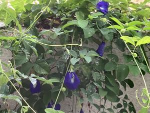
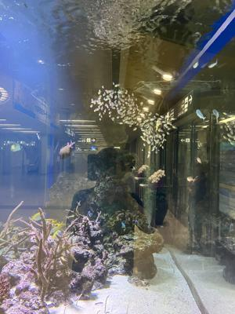
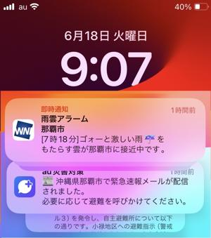

うるがいの話 ある日
最新: 研修医【うるがいの話 ある日】とは 一日だけのプログです
『うるがいの話』の最新一日だけのプログで、通信料が少なく経済的だ。カニの画像をクリックすると全ての日付が載る『うるがいの話』サイトを表示します
|
|
【うるがいの話】 うるがい(ｳﾙｶﾞｲ urugai)とは、『もずくがに』の名前でとても大きくなります。 |
|---|---|
|
|
【カミマヤーの話】 猫のことを方言でマヤーといいます。カミマヤー（kamimayaa）とは、神の猫のことです。 |
|
【たながぁの音楽】 たながぁ（ﾀﾅｶﾞｰ tanagaa）とは手長えびのことで、何種類かあり大きいのは車 エビぐらいになります。 |

|
【ぶながぁの話】 ぶながぁ(ﾌﾞﾅｶﾞｰ bunagaa)とは、赤い髪の毛、赤い身体、そして身長は１ｍ２０ｃｍ ぐらい、川の蟹を食べているの目撃された。場所は沖縄県国頭郡大宜味村のと ある村僕の隣近所に住んでいる爺さんから、聞いた話です。 |
|
|
【ギーマの話】 ギーマ(giima)とは、山原の里山に咲くスズランに似た、 花を付けます。実は食べられます、 気が付くと口の周りが紫になっています。 |
2024年06月18日 (火）研修医
15:01


グルクンは、泳いでいる時は青いよ、この小さい群れをなしている魚（スカ
シテンジクダイ）は、うちの部落では護岸にムシロをしいて、干し食べてい
ましたヨと、那覇空港で撮った水槽の写真を、お義母さんにスマホで見せな
がら診察までの時間を潰す。『ここはどこかね？、なぜ私はここにいるのか
ね？」、既に百回近くは繰り返しだろうか、カリュームの値が、４、５、そ
して急に７になったのでタナ先生が、県立病院で見てもらってと説明する。
すると、私の隣にいた女性が、いきなり『私も７で透析をしなければいけな
いと言われています、よくなりますかね？』と言う。失礼ですがお歳はと尋
ねると８３才と答える。ええ、大丈夫ですよ、透析している人知っています
が元気で、美味しいものも食べてますよ、お義母さんは９３才なのでもう透
析はしたくないといってますが・・・』。傍でお義母さんは、早く死にたい
天国へはやくいきたい（地獄という選択はないようだ）と繰り返し呟く。内
科の先生は、研修医（ヨメがネットで調べた）である。診察は丁寧で時間が
かかる。昨日で、一応終わりの筈だったが（指導医の指示を受け）、薬の処
方を再度見直さないといけないということになり、もう一度行くことになる
病院は悪い気があるのだろうか、今日は肩こりが凄く左目も血管が切れた。

今朝、２度眠をしようと横になるとスマホから緊急速報のアラームがなる。
お！、たまらんと緊急速報の常に警報音を鳴らすをオフにした。
１４時５５分 ビットコインの総資産 ￥３０、０７０（↓６７）